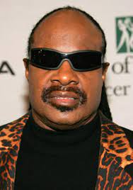
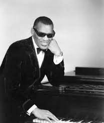

Cena
| CENNIK | |
|---|---|
| GRANICA KOSMOSU | 5 000 000 zł na osobę |
| WYCIECZKA NA KSIĘŻYC | 10 000 021 zł na osobę |
| SAMOBÓJCZA JEDNORAZOWA PODRÓŻ DO SŁOŃCA | BEZPŁATNE DARMOWE FREE |
Historia: Wielkimi krokami zbliżamy się do ery kosmicznej turystyki. Ile kosztuje lot w kosmos? Czy każdy, kto jest w stanie zapłacić odpowiednio wysoką cenę, może wyruszyć na kosmiczną odyseję?
Załoga| Bill Cosby | |
Bill Cosby, właśc. William Henry Cosby Jr. – amerykański komik, aktor, producent telewizyjny, muzyk, kompozytor i aktywista społeczny.był publicznie oskarżany o gwałt, narkotyzowanie, przymus do seksu lub napaść seksualną wobec sześćdziesięciu kobiet |
| Michael Jackson | |
Michael Joseph Jackson – amerykański piosenkarz muzyki pop, R&B, soul, rock i funk, autor tekstów, artysta estradowy, tancerz, aktor, kompozytor i filantrop. Oskarżony o napaść seksualną wobec dzieci. |
| Mike Tyson | |
Mike Tyson, właśc. Michael Gerald Tyson – amerykański bokser. Jest dwukrotnym mistrzem świata wszechwag zawodowców. Zgwałcił kobietę i miał 3 tygrysy |
| Michael Jordan | |
Michael Jordan, Uznawany za jednego z najlepszych koszykarzy świata. |
| Stevie WOnder |  | Stevie Wonder, Ślepy muzyk grający Rhythm & Blues oraz muzykę popularną. Uznawany za świetnego artystę szczególnie z jego umiejętnościami gry na harmonijce. Był ślepy. |
| O. J. Simpson | |
O. J. Simpson, aktor, amerykański celebryta oskarżony o moderstwo żony oraz przyjaciela jednak jego sprawa zosała odsunięta. |
| Ray CHarles |  | Amerykański muzyk grający muzykę R&B oraz blues. Zasłynął numerami jak "Hit the road Jack".Był ślepy. |